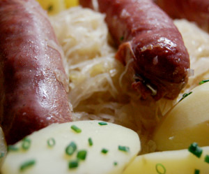

Sauerkraut und Wildwürste
5 von 6Eine Zwiebel, 2 Knoblauchzehen und ein Apfel in etwas Olivenöl andäpfen. Das rohe Sauerkraut beigeben und mit 2.5 Dl Riesling ablöschen. Mit Lorbeerblätter, Salz, Pfeffer und einigen Wachholderbeeren würzen. Bei kleiner Hitze 30 Minuten garen. Die Wildwürste (oder als Alternative Waadtländersaucisson) beigeben und weitere 30 Minuten weiter garen. Auf einem Teller mit Salzkartoffeln anrichten.
